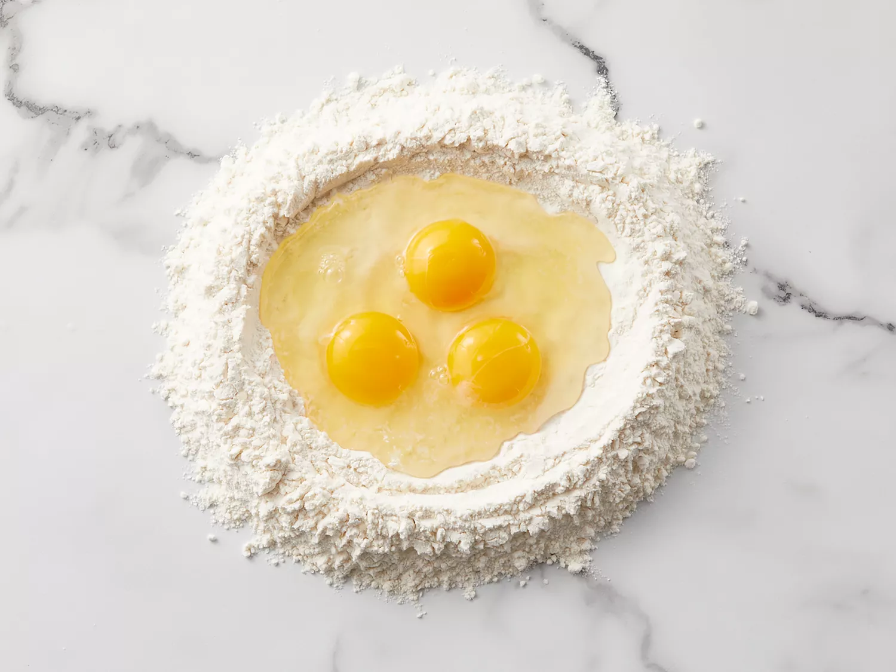
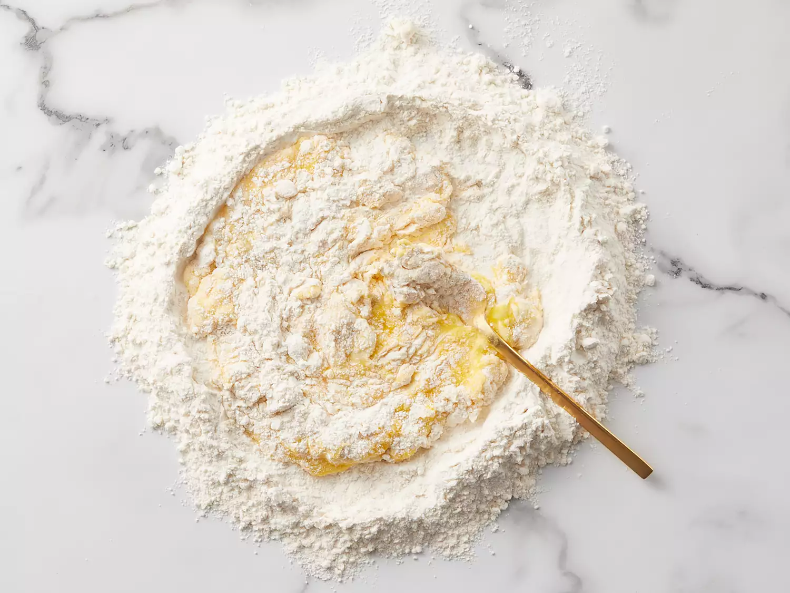
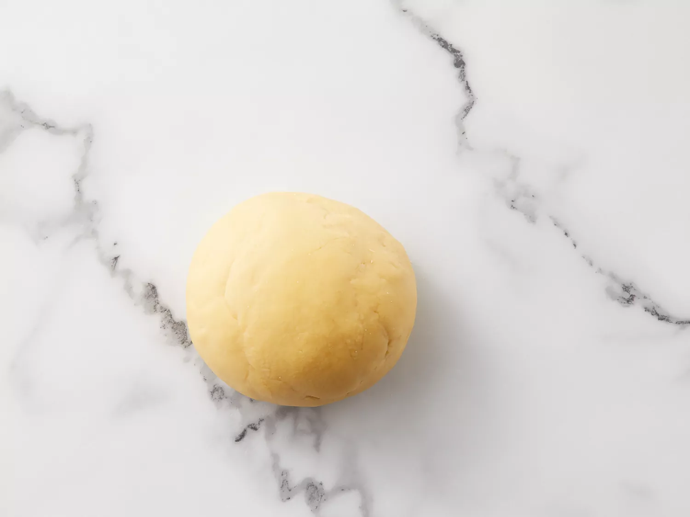
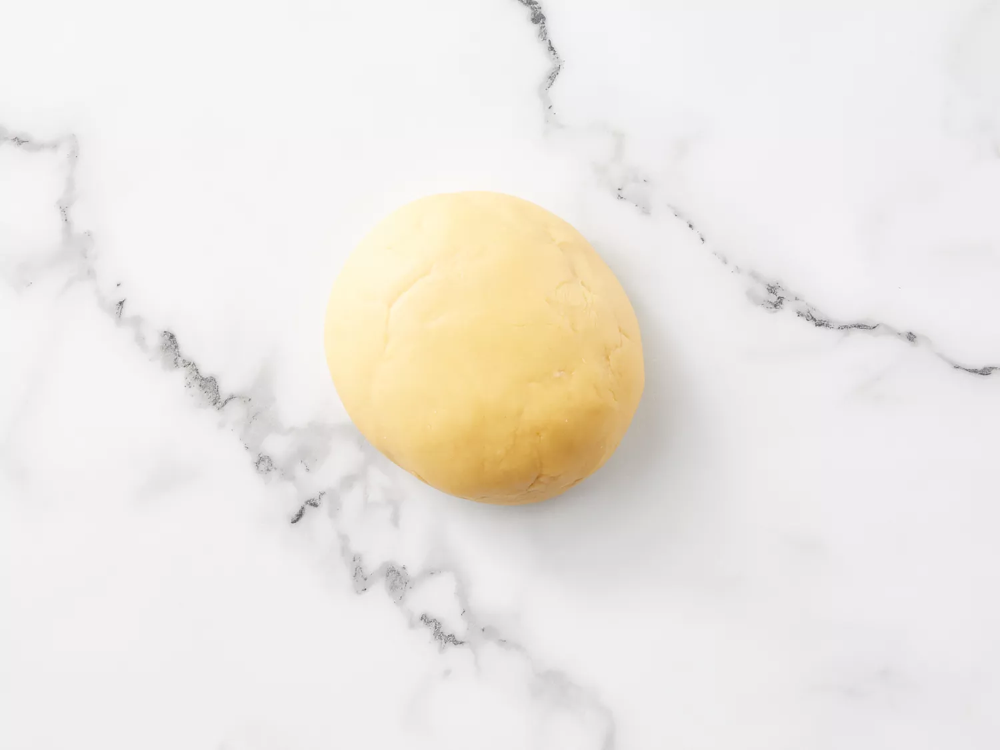

Gather all ingredients.


Bring in the remaining flour with a bench scraper until dough forms a ball.
Mix in water, 1 tablespoon at a time, if dough feels too stiff.
 
Turn 45 degrees and repeat until dough is soft and smooth, about 10 minutes.

Divide dough into 3 equal portions.
Take one piece and flatten it a bit with your hands.
Dust a work surface with flour and roll dough out using a rolling pin 5 to 6 times.
Turn dough 45 degrees and roll out again, 5 to 6 times.
Keep rolling and turning in the same way until dough is evenly very thin.
When you hold up the dough, you should be able to see your fingers through it.
Cut pasta dough into rectangular sheets to fit your baking dish using a pastry wheel or a knife.
Transfer lasagna sheets to a floured kitchen towel and let air-dry for about 30 minutes before assembling.